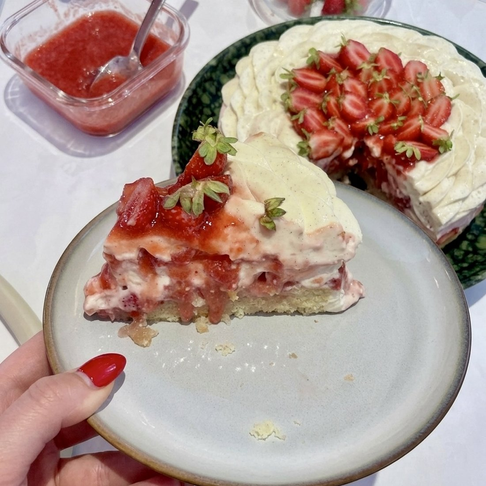

Pâtisserie · Entremets
La Bombe à la Fraise
Un gâteau madeleine, une crème nuage vanille et des fraises fraîches, montés en cercle de 23 cm.
640kcal / part
8parts
8,1 gprotéines
73,8 gglucides
Ingrédients
- Crème pâtissière (J-1)
- 500 ml de lait entier
- 4 jaunes d'œufs
- 100 g de sucre
- 40 g de maïzena
- 1 gousse de vanille
- Chantache (J-1)
- 100 g de crème chaude 33% MG
- 300 g de crème froide 33% MG
- 20 g de sucre glace
- 20 g de chocolat blanc
- 1/2 gousse de vanille
- 4 g de gélatine feuille 200 bloom
- Gâteau madeleine (J-1)
- 100 g de sucre semoule
- 2 œufs (environ 110 g)
- 100 g de farine T55
- 2 g de levure chimique
- 100 g de beurre doux fondu
- 1 pincée de sel fin
- 1 g de vanille en poudre
- 1 zeste de citron jaune finement haché
- Coulis de fraises (J-1)
- 300 g de fraises
- 180 g de sucre
- 2 feuilles de gélatine
- Montage (Jour J)
- 390 g de crème pâtissière
- 120 g de chantache
- 400 g de fraises fraîches
Préparation
- Crème pâtissière : chauffez le lait avec la gousse de vanille fendue et grattée. Fouettez les jaunes avec le sucre jusqu'à blanchissement, incorporez la maïzena. Versez le lait chaud en filet, reversez dans la casserole et faites épaissir 2 minutes en fouettant sans arrêt. Filmez au contact et réservez au frigo.
- Chantache : faites chauffer les 100 g de crème. Dans un cul-de-poule, déposez le chocolat blanc, le sucre glace, la vanille et la gélatine égouttée. Versez la crème chaude dessus et mixez, puis ajoutez les 300 g de crème froide. Filmez au contact et laissez reposer une nuit au frais.
- Gâteau madeleine : sortez tous les ingrédients à température ambiante. Faites fondre le beurre puis laissez-le refroidir. Préchauffez le four à 200°C chaleur tournante et tamisez la farine avec la levure.
- Dans la cuve du robot, battez les œufs et le sucre avec une pointe de sel à vitesse moyenne, jusqu'à obtenir un sabayon aéré. Attendez qu'il soit bien monté avant de continuer.
- Incorporez la farine et la levure tamisées en pluie, délicatement.
- Ajoutez ensuite le beurre fondu froid, puis le zeste de citron et la vanille.
- Vous devez obtenir une pâte à biscuit madeleine souple et brillante, avec cette texture.
- Étalez la pâte uniformément dans un cercle de 22 cm.
- Enfournez 12 à 17 minutes jusqu'à coloration dorée, en tournant la plaque à mi-cuisson. Laissez refroidir sur grille, puis découpez un disque à la taille de votre cercle.
- Coulis de fraises : mettez les fraises et le sucre à compoter à feu doux. Après 20 minutes, mixez le tout et ajoutez les deux feuilles de gélatine préalablement ramollies. Filmez au contact et réservez au frais.
- crème nuage : lissez les 390 g de crème pâtissière au fouet. Montez la chantache dans une cuve bien froide, puis mélangez délicatement les deux masses.
- Montage : placez une bande de rhodoïd tout autour du cercle de 23 cm, puis déposez le gâteau madeleine au centre.
- Pochez la crème nuage tout autour du gâteau en remontant bien sur les bords : c'est ce qui donne un visuel net, sans trou.
- Ajoutez une couche de coulis, puis des fraises découpées. Recouvrez d'une couche de crème.
- Répétez : coulis, fraises, puis une dernière couche de crème que vous lissez soigneusement sur le dessus.
- Réservez au frais 4 heures minimum. Pour la finition, pochez le décor qui vous plaît : ici une simple fleur pochée, avec un cercle de coulis au centre recouvert de fraises coupées en deux.
L'astuce d'ElsaMon coulis était trop sucré la première fois : j'étais partie sur 300 g de sucre pour 300 g de fraises. Comptez plutôt 160 à 200 g. Tout se prépare la veille — le jour J, il ne reste qu'à monter la chantache et à assembler.
Voir cette recette en mode cuisine